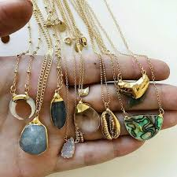
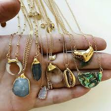
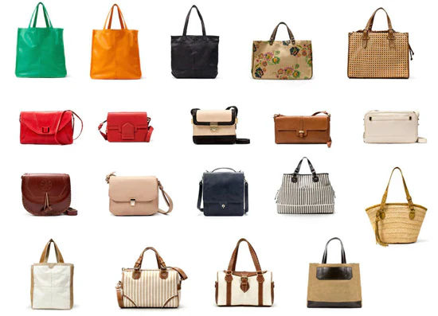

Our Products
Why We Should Wear Rings and Bracelets...
Bracelets, rings, and other jewelry pieces are more than just adornments—they hold the power to tell stories and mark significant moments in our lives. A bracelet might remind us of a special friendship or a memorable vacation, while rings can symbolize love and commitment. Jewelry often carries cultural and personal meanings, passed down through generations or chosen to reflect our individual style. Beyond their beauty, bracelets and rings can be subtle statements of identity or simply bright spots in our day-to-day attire. Whether sparkling with gemstones or crafted with minimalist elegance, they effortlessly add a touch of charm and sophistication to any outfit, making them timeless accessories cherished for their sentimental value as much as their aesthetic appeal.
.jpg)
.jpg) 

$39.99
Why We Should Wear Bags
Bags are indispensable companions in our daily lives, offering both practicality and style. Whether it's a sleek tote for work essentials or a compact backpack for adventures, bags keep our belongings organized and easily accessible. Beyond their functional role, bags also make a fashion statement, enhancing our outfits with texture, color, and design. From conveying professionalism in a business setting to adding a touch of casual chic on weekends, the right bag complements our personal style and boosts our confidence. Moreover, bags serve as practical tools for carrying everything from laptops to groceries, making them essential accessories that blend convenience with fashion flair.
$69.99